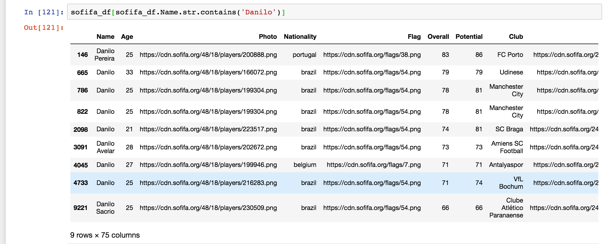
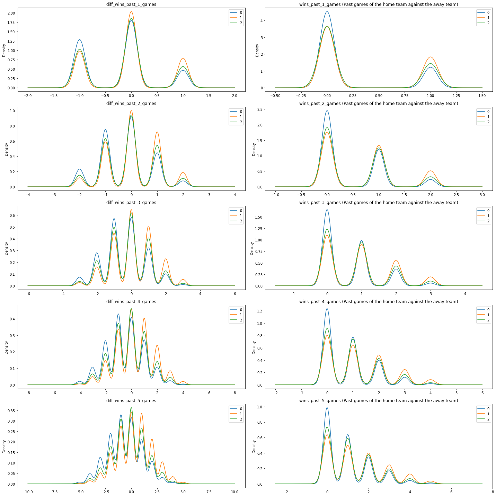

We were able to find a dataset on Kaggle that contains all FIFA international men teams’ rankings from August 1993 to June 2018. This dataset will prove essential in building our baseline model using essentially only the FIFA rankings and basic summary statistics about the teams.
We also found a database on Kaggle that contains data about European matches for the seasons Seasons 2008 to 2016 that also contain information about the teams and players. We primarily used this database to see look at individual ratings of players.
We were able to find a dataset on Gitlab that contains the results of each match of the 2018 World Cup. This allows us to easily construct a test set.
We also wrote two scrapers for Wikipedia.
Because in the case of the World Cup, home team does not actually mean anything (besides for Russia itself), we needed each feature in our models to be agnostic to which team is home and which team is away so that so that switching home team and away team does not result in different predictions despite everything else being the same. The most simple way to do so that also makes sense is to take the difference of home team features with away team features, as we can think of these as being difference in skills/abilities of the teams.
Summary:
In this dataset, we focused primarily on seeing if individual player statistics were important predictors of the outcome of a match. We aggregated for each team different player statistics and differenced the aggregates. From looking at the plots the distributions of a difference in rating among the three outcome do not really seem that different. This might be an indication that using individual ratings and aggregating them might not be the way to go.

On the other hand, it seems that previous match results will be good predictors. This time it is a bit more obvious that home team winning tends to have higher values. It seems like we can probably calculate some kind of momentum and utilize it as a predictor. We will explore more of this concept later on when we try to make more advanced models.

We kept these discoveries in mind as we move on to the Sofifa datasets.
Summary:
We have two different simple baseline models, one where we just guess the majority outcome every time (home team wins). By just guessing the majority outcome every time, we could achieve a 42.1875% accuracy in predicting the World Cup results.
The other baseline model utilizes the FIFA rankings as well as some basic team features, including difference in attack ratings, difference in defense ratings, and difference in midfield ratings. Through classification methods such as logistic regression, LDA, QDA, and Random Forest, we were able to achieve around 60% accuracy in predicting the World Cup results. We hope to at least match this accuracy in our more advanced model that does not utilize the FIFA rankings.
Note that because in the World Cup starting from the Round of 16 there
can no longer be ties, we decided for these matches if the model
predicts a tie (i.e. tie is the highest probability), we take the result
with the second highest probability as our prediction. This function can
be found inside the models folder with the name
predict_test_data.py.
One of the largest issues we encountered after we collected all the data was that we realized that we will not be able to merge all the rows. There are two different underlying problems:
Each dataset we collected had a different naming convention for the
countries. In most cases, this was due to slight variation in spelling
(i.e. St Lucia vs Saint Lucia). With all these different variations, we
needed to map all the variations to just one name so that we could merge
our datasets. We decided to use the official FIFA names of the countries
found using the FIFA rankings dataset as the mapped names. Then, in
order to tackle this problem, we decided to install the package
fuzzywuzzy, which
essentially calculates a similarity score using Levenshtein Distance
between two strings. We wrote the method map_country() that
essentially calculates the Levenshtein Distance for a country_name
string if the country_name string does not exactly match with the FIFA
names and map the string to the FIFA name with the highest similarity
score (in percentage). We only do this mapping if the highest similarity
score is above a 80%, when we are very confident that this is the right
mapping. From manual inspection, this turned out extremely well and we
believe that there should be no wrong mapping.
However, in some cases, we still needed to do some manual mapping for
ones in which the Levenshtein Distance is not confident about the
mapping, such as in the case of the two Koreas, but the
map_country() function has saved us from doing many manual mappings.
There were teams that were not national teams at all (i.e. United Koreans in Japan, which is a team for the Korean population in Japan).
However, as mentioned before, in the end, we only care about the
national teams that are affiliated with FIFA. As such, we only keep the
rows where both teams appeared on the FIFA rankings starting from 2010
(All affiliated teams are ranked, and we only look after 2010 because
some countries that were on older rankings no longer exist or changed
names such as Zaire, which became Congo DR). Our method
map_country() in map_countries.py easily takes care of this
since in general there is no similarity score that is above 80% (except
for a few edge cases such as Northern Cyprus, which is a different team
than Cyprus and is not allowed to compete in FIFA). These we manually
took care of.
In the end, however, we decided to scrap all of this effort since our main goal is to be able to predict the winner of each match in the World Cup, we decided to focus on the teams that have appeared in the World Cup before. By doing so, we basically rendered all the above effort pointless, but one can still see our code for all of this in the repo.
While different naming conventions for countries did not prove much of a problem, different datasets having different naming conventions for the players themselves proved to be a major problem. Our attempts with fuzzy matching did not turn out turn out that successful in this case. This is exacerbated by the fact that there were actually a lot more players with the same name than we expected there to be (especially in the case of Brazil).
While theoretically one could match the right player in the players with the same names with the club they played for, the clubs themselves also had different naming conventions, so correctly matching players would result in a TON of manual work.
This is one of the main reasons we decided to try out the European Soccer Database to see if individual player ratings could be of use before we attempted anything further with player data since in that dataset we could identify each player by a unique id, and from the EDA, we saw that individual data did not really help at all. As such, we decided to forgo on using indiviual player data.
In [ ]: